Chapter 04
Geocentric Models
Material
Introduction
These are answers and solutions to the exercises at the end of chapter 4 in Satistical Rethinking 2 by Richard McElreath. I have created these notes as a part of my ongoing involvement in the AU Bayes Study Group. Much of my inspiration for these solutions, where necessary, has been obtained from Jeffrey Girard.
Easy Exercises
Practice E1
Question: In the model definition below, which line is the likelihood?
- $y_i \sim Normal(\mu, \sigma)$
- $\mu \sim Normal(0, 10)$
- $\sigma \sim Uniform(0, 10)$
Answer: 1, $y_i \sim Normal(\mu, \sigma)$ - This is the likelihood specification (see also page 84 in the book). Everything else is a specification of priors.
Practice E2
Question: In the model definition just above, how many parameters are in the posterior distribution?
Answer: $y_i$ is not to be estimated, but represents the data we have at hand and want to understand through parameters. Both $\mu$ and $\sigma$ are parameters which we attempt to estimate.
Practice E3
Question: Using the model definition above, write down the appropriate form of Bayes’ theorem that includes the proper likelihood and priors.
Answer: Following the specification in the “Overthinking” box on page 87, we can write the Bayes' Theorem for the model above as:
$Pr(\mu, \sigma | y) = \frac{\prod_i Normal(y_i| \mu, \sigma) Normal(\mu| 0, 10) Uniform(\sigma | 0, 10)}{\int\int\prod_i Normal(y_i| \mu, \sigma) Normal(\mu| 0, 10) Uniform(\sigma | 0, 10) d\mu d\sigma}$
Practice E4
Question: In the model definition below, which line is the linear model?
- $y_i \sim Normal(\mu, \sigma)$
- $\mu_i=\alpha+\beta x_i$
- $\alpha \sim Normal(0,10)$
- $\beta \sim Normal(0,1)$
- $\sigma \sim Uniform(0,10)$
Answer: The linear model is deterministic in nature (i.e. the parameters determine the value of the response variable). This is identified with the mathematical notation of $=$. Therefore, line 2. $\mu_i=\alpha+\beta x_i$ is the linear model. All other specifications are stochastic links (identified with $\sim$).
Practice E5
Question: In the model definition just above, how many parameters are in the posterior distribution?
Answer: Three. $\alpha$, $\beta$, and $\sigma$ are the parameters we estimate. $y_i \sim Normal(\mu, \sigma)$ is the likelihood.
Medium Exercises
This is where we get into R applications.
rm(list = ls())
library(rethinking)
Practice M1
Question: For the model definition below, simulate observed heights from the prior (not the posterior).
- $y_i \sim Normal(\mu, \sigma)$
- $\mu \sim Normal(0, 10)$
- $\sigma \sim Uniform(0, 10)$
Answer:
set.seed(42)
sample_mu <- rnorm(1e4, 0, 10)
sample_sigma <- runif(1e4, 0, 10)
prior_y <- rnorm(1e4, sample_mu, sample_sigma)
dens(prior_y)
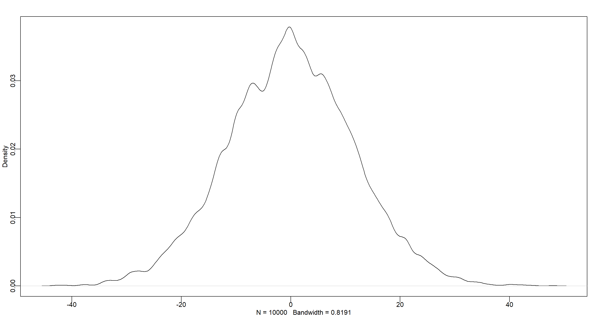
Practice M2
Question: Translate the model just above into a quap() formula.
Answer:
formula <- alist(
y ~ dnorm(mu, sigma),
mu ~ dnorm(0, 10),
sigma ~ dunif(0, 10)
)
formula
## [[1]]
## y ~ dnorm(mu, sigma)
##
## [[2]]
## mu ~ dnorm(0, 10)
##
## [[3]]
## sigma ~ dunif(0, 10)
Practice M3
Question: Translate the quap() model formula below into a mathematical model definition.
flist <- alist(
y ~ dnorm(mu, sigma),
mu <- a + b * x,
a ~ dnorm(0, 50),
b ~ dunif(0, 10),
sigma ~ dunif(0, 50)
)
Answer:
- $y_i \sim Normal(\mu, \sigma)$
- $\mu_i=\alpha+\beta x_i$
- $\alpha \sim Normal(0,50)$
- $\beta \sim Uniform(0,10)$
- $\sigma \sim Uniform(0,50)$
Practice M4
Question: A sample of students is measured for height each year for 3 years. After the third year, you want to fit a linear regression predicting height using year as a predictor. Write down the mathematical model definition for this regression, using any variable names and priors you choose. Be prepared to defend you choice of priors.
Answer: Firstly, I start by identifying the likelihood of heights $h$. I assume these to be normally distributed around some mean $\mu$, with a standard deviation of $\sigma$:
$h_i = Normal(\mu, \sigma)$
$\mu$ is the mean of heights and can be obtained as follows:
$\mu_i = \alpha + \beta x_i$
Setting aside the issue of independence here - each student shows up in the data multiple times, thus making the time-series of heights dependent and potentially autocorrelated - no age range has been specified for our students in question. This leaves us with little information regarding potential priors (elementary school students are much smaller than university students). Therefore, I chose a weak prior with a large range. I call this prior for the height intercept $\alpha$ and assume a normal distribution with a wide range:
$\alpha \sim Normal(150,25)$
set.seed(42)
dens(rnorm(1e4, 150, 25))
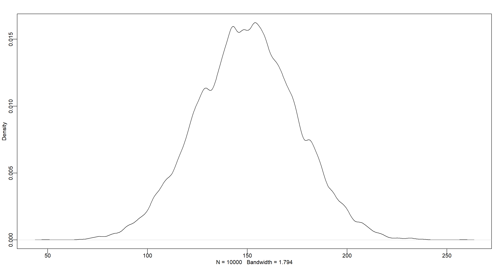
$\beta$ represents the average increase of in height for each year. Again, the potentially large age range means we have to use a somewhat uninformative prior because people grow very differently at different ages. The distribution here could be argued to be uniform or normal. I am going with normal because it emphasises a much more peaked distribution of growth rates with an emphasis for the mean:
$\beta \sim Normal(4,1)$
set.seed(42)
dens(rnorm(1e4, 4, 2))
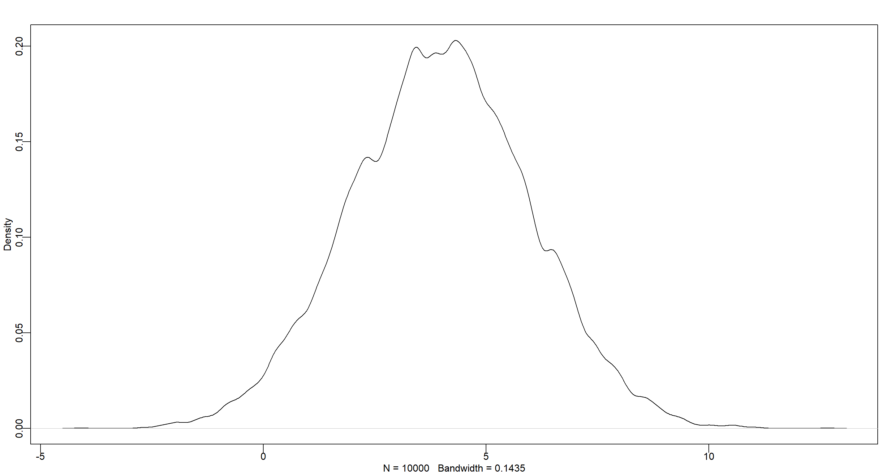
As you can see, this choice of prior for $\alpha$ would allow for negative growth rates which might be an issue.
Finally, we need to identify our $\sigma$ where I specify a uniform range that covers the full range of heights when given a large range of students (in age, that is):
$\sigma \sim Uniform(0,30)$
Plugging this one into our height simulation, we get a wide but overall sensible range:
set.seed(42)
dens(rnorm(1e4, 150, 30))
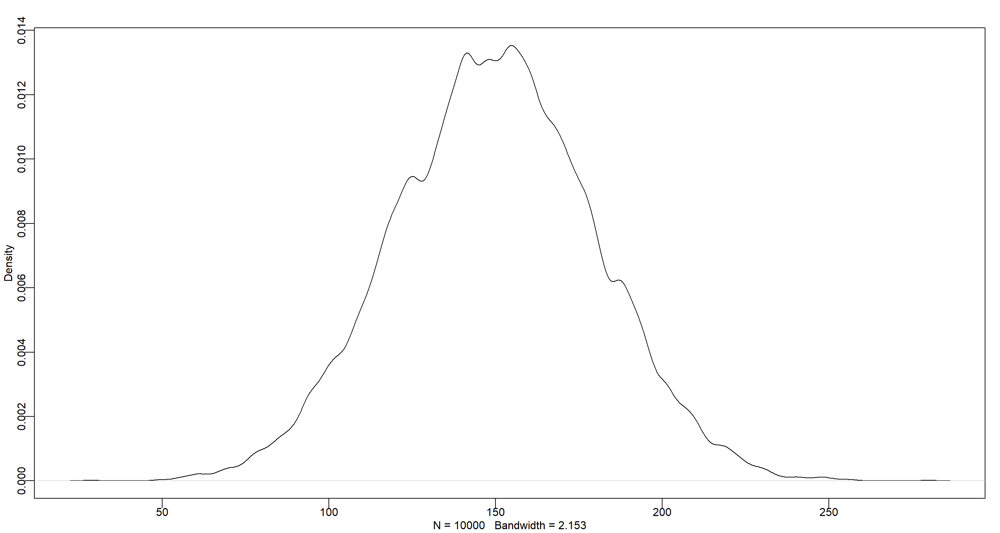
Personally, I think a second-order polynomial regression could be sensible here to account for the change in growth rate over time, but I assume a latter question will deal with that.
Practice M5
Question: Now suppose I remind you that every student got taller each year. Does this information lead you to change your choice of priors? How?
Answer: Yes, I can change my prior for $\beta$ to always be positive by using a log-normal distribution:
$\beta \sim LogNormal(2,0.5)$
set.seed(42)
dens(rlnorm(1e4, 2, .5))
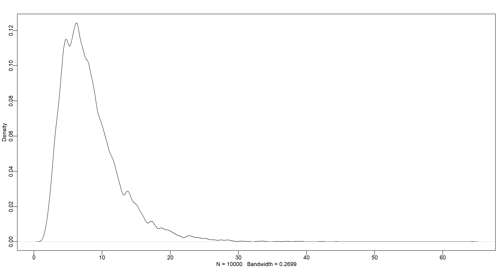 Now this makes much more sense!
Practice M6
Question: Now suppose I tell you that the variance among heights for students of the same age is never more than 64 cm. How does this lead you to revise your priors?
Answer: The variance is the square product of $\sigma$, so we know that $\sigma$ never exceeds $\sqrt(64) = 8$ and can update our prior accordingly:
$\sigma \sim Uniform(0,8)$
set.seed(42)
dens(runif(1e4, 0, 8))
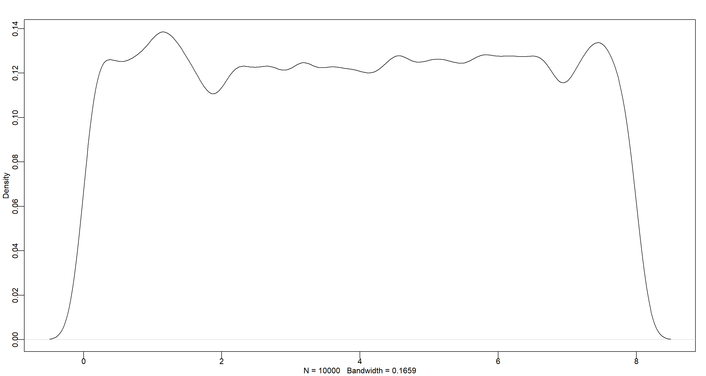
Hard Exercises
Practice H1
Question: The weights listed below were recorded in the !Kung census, but heights were not recorded for these individuals. Provide predicted heights and 89% intervals (either HPDI or PI) for each of these individuals. That is, fill in the table below, using model-based predictions.
| Individual | weight | expected height | 89% interval |
|---|---|---|---|
| 1 | 46.95 | ||
| 2 | 43.72 | ||
| 3 | 64.78 | ||
| 4 | 32.59 | ||
| 5 | 54.63 |
Answer:
data("Howell1")
d <- Howell1
formula <- alist(
height ~ dnorm(mu, sigma),
mu <- a + b * weight,
a ~ dnorm(150, 30), # a relatively short height with a large SD to account for large age spread in data set and the overall smaller stature of the peoples in the !Kung census
b ~ dlnorm(0, 1), # I want strictly positive weight-height relationships
sigma ~ dunif(0, 50) # rather large SD
)
(m <- quap(formula, data = d))
##
## Quadratic approximate posterior distribution
##
## Formula:
## height ~ dnorm(mu, sigma)
## mu <- a + b * weight
## a ~ dnorm(150, 30)
## b ~ dlnorm(0, 1)
## sigma ~ dunif(0, 50)
##
## Posterior means:
## a b sigma
## 75.550586 1.761449 9.345982
##
## Log-likelihood: -1987.71
Now, we can obtain the posterior distributions for our weight values in the table:
new_weight <- c(46.95, 43.72, 64.78, 32.59, 54.63)
pred_height <- link(m, data = data.frame(weight = new_weight))
expected <- apply(pred_height, 2, mean)
interval <- apply(pred_height, 2, HPDI, prob = 0.89)
Finally, we merge this into a data frame:
data.frame(
individual = 1:5,
weight = new_weight,
expected = expected,
lower = interval[1, ],
upper = interval[2, ]
)
## individual weight expected lower upper
## 1 1 46.95 158.2948 157.4868 159.1242
## 2 2 43.72 152.6012 151.9167 153.3826
## 3 3 64.78 189.7242 188.3729 191.2549
## 4 4 32.59 132.9821 132.3565 133.6889
## 5 5 54.63 171.8326 170.9136 173.0242
Practice H2
Question: Select out all the rows in the Howell1 data with ages below 18 years of age. If you do it right, you should end up with a new data frame with 192 rows in it.
Answer:
d2 <- Howell1[Howell1$age < 18, ]
weight_bar <- mean(d2$weight)
nrow(d2)
## [1] 192
Part A
Question: Fit a linear regression to these data, using quap(). Present and interpret the estimates. For every 10 units of increase in weight, how much taller does the model predict a child gets?
Answer:
formula <- alist(
height ~ dnorm(mu, sigma),
mu <- a + b * (weight - weight_bar),
a ~ dnorm(110, 30),
b ~ dlnorm(0, 1),
sigma ~ dunif(0, 60)
)
m <- quap(formula, data = d2)
precis(m)
## mean sd 5.5% 94.5%
## a 108.319563 0.6087746 107.346624 109.292503
## b 2.716656 0.0683154 2.607475 2.825838
## sigma 8.437165 0.4305635 7.749042 9.125289
For a 10-unit increase in weight, we see a 27.17cm increase in height.
Part B
Question: Plot the raw data, with height on the vertical axis and weight on the horizontal axis. Superimpose the MAP regression line and 89% HPDI for the mean. Also superimpose the 89% HPDI for predicted heights.
Answer:
# Data for plot
weight.seq <- seq(from = min(d2$weight), to = max(d2$weight), by = 1) # sequence to do predictions for
mu <- link(m, data = data.frame(weight = weight.seq)) # do predictions
mu.mean <- apply(mu, 2, mean) # calculate mean
mu.HPDI <- apply(mu, 2, HPDI, prob = 0.89) # identify interval
sim.height <- sim(m, data = list(weight = weight.seq)) # simulate full predictions
height.HPDI <- apply(sim.height, 2, HPDI, prob = 0.89) # identify interval
# Plotting
plot(height ~ weight, data = d2, col = col.alpha(rangi2, 0.7)) # base plot
lines(weight.seq, mu.mean) # add mean line
shade(mu.HPDI, weight.seq) # add hdpi interval
shade(height.HPDI, weight.seq) # add full-hdpi interval
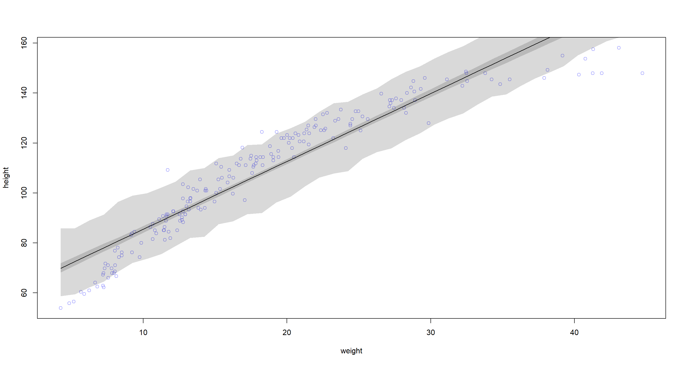
Part C
Question: What aspects of the model fit concern you? Describe the kinds of assumptions you would change, if any, to improve the model. You don’t have to write any new code. Just explain what the model appears to be doing a bad job of, and what you hypothesize would be a better model.
Answer: The model woefully overpredicts height at the low-weight end of the spectrum as well as the upper end of the weight spectrum. At the mid-range of the weight spectrum, our model underpredicts height. It looks as though the data fall onto a curve and so we could potentially do better with a polynomial model.
Practice H3
Question: Suppose a colleague of yours, who works on allometry, glances at the practice problems just above. Your colleague exclaims, “That’s silly. Everyone knows that it’s only the logarithm of body weight that scales with height!” Let’s take your colleague’s advice and see what happens.
Part A
Question: Model the relationship between height (cm) and the natural logarithm of weight (log-kg). Use the entire Howell1 data frame, all 544 rows, adults and non-adults. Fit this model, using the quadratic approximation:
$h_i ∼ Normal(\mu_i, \sigma)$
$\mu_i = \alpha + \beta log(w_i)$
$\alpha ∼ Normal(178, 20)$
$\beta ∼ LogNormal(0, 1)$
$\sigma ∼ Uniform(0, 50)$
where $h_i$ is the height of individual $i$ and $w_i$ is the weight (in kg) of individual $i$. The function for computing a natural log in R is just log(). Can you interpret the resulting estimates?
Answer:
d <- Howell1
formula <- alist(
height ~ dnorm(mu, sigma),
mu <- a + b * log(weight),
a ~ dnorm(178, 20),
b ~ dlnorm(0, 1),
sigma ~ dunif(0, 50)
)
m <- quap(formula, data = d)
precis(m)
## mean sd 5.5% 94.5%
## a -22.874329 1.3343120 -25.006817 -20.741840
## b 46.817801 0.3823300 46.206764 47.428838
## sigma 5.137168 0.1558908 4.888025 5.386312
Our $\alpha$ estimate seems to be out-of-line at -22.87. This is simply the predicted height when the weight is 0 log-kg and thus somewhat uninformative. $\beta$ tells us that our individual grow, on average, by 46.82cm per increase in log-kg by 1. The standard deviation around our height predictions is 5.14.
Transforming a variable makes interpreting diffuclt.
Part B
Question: Begin with this plot: plot(height ~ weight, data = Howell1), col = col.alpha(rangi2, 0.4)). Then use samples from the quadratic approximate posterior of the model in (a) to superimpose on the plot: (1) the predicted mean height as a function of weight, (2) the 97% HPDI for the mean, and (3) the 97% HPDI for predicted heights.
Answer:
plot(height ~ weight, data = d, col = col.alpha(rangi2, 0.4))
# Estimate and plot the quap regression line and 97% HPDI for the mean
weight.seq <- seq(from = min(d$weight), to = max(d$weight), by = 1)
mu <- link(m, data = data.frame(weight = weight.seq))
mu.mean <- apply(mu, 2, mean)
mu.HPDI <- apply(mu, 2, HPDI, prob = 0.97)
lines(weight.seq, mu.mean)
shade(mu.HPDI, weight.seq)
# Estimate and plot the 97% HPDI for the predicted heights
sim.height <- sim(m, data = list(weight = weight.seq))
height.HPDI <- apply(sim.height, 2, HPDI, prob = 0.97)
shade(height.HPDI, weight.seq)
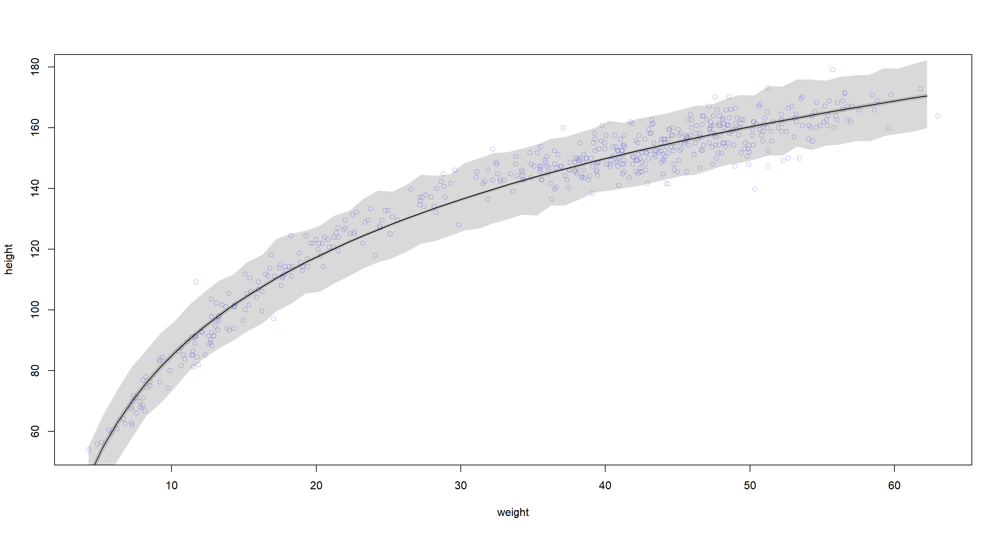 Yup, this does fit much more neatly.
Practice H4
Question: Plot the prior predictive distribution for the polynomial regression model in the chapter. You can modify the code that plots the linear regression prior predictive distribution. Can you modify the prior distributions of $\alpha$, $\beta_1$, and $\beta_2$ so that the prior predictions stay within the biologically reasonable outcome space? That is to say: Do not try to fit the data by hand. But do try to keep the curves consistent with what you know about height and weight, before seeing these exact data.
Answer:
data("Howell1")
d <- Howell1
# standardising weight
d$weight_s <- with(d, (weight - mean(weight)) / sd(weight))
# quadratic weight
d$weight_s2 <- d$weight_s^2
# MODEL
M_Poly <- quap(
alist(
height ~ dnorm(mu, sigma),
mu <- a + b1 * weight_s + b2 * weight_s2,
a ~ dnorm(178, 20),
b1 ~ dlnorm(0, 1),
b2 ~ dnorm(0, 1),
sigma ~ dunif(0, 50)
),
data = d
)
precis(M_Poly)
## mean sd 5.5% 94.5%
## a 146.054799 0.3689900 145.465082 146.644517
## b1 21.734548 0.2888949 21.272839 22.196258
## b2 -7.800570 0.2742037 -8.238800 -7.362339
## sigma 5.774487 0.1764685 5.492456 6.056517
The prior prediction can be obtained using extract.prior(). The obtained sample can then be passed on to the link() function for the weight space in question. Since we want to try multiple priors, I use a function that takes the alist object as well as the number of predicted curves as arguments. This function-idea has been adapted from
Gregor Mathes solution which is based on the use of tidyverse:
library(tidyr) # we don't get around using the function pivot_longer()
library(ggplot2)
modify_prior_poly <- function(my_alist, N) {
# set seed for reproducibility
set.seed(42)
# fit model
m_poly <- quap(my_alist, data = d)
# make weight sequence with both standardised weight and the square of it
weight_seq <- seq(from = min(d$weight), to = max(d$weight), by = 1)
weight_seq <- data.frame(
weight = weight_seq,
weight_s = (weight_seq - mean(weight_seq)) / sd(weight_seq),
weight_s2 = ((weight_seq - mean(weight_seq)) / sd(weight_seq))^2
)
# extract samples from the prior
m_poly_prior <- extract.prior(m_poly, n = N)
# now apply the polynomial equation to the priors to get predicted heights
m_poly_mu <- link(
m_poly,
post = m_poly_prior,
data = list(
weight_s = weight_seq$weight_s,
weight_s2 = weight_seq$weight_s2
)
)
m_poly_mu <- as.data.frame(m_poly_mu)
m_poly_mu <- as.data.frame(pivot_longer(m_poly_mu, cols = everything(), values_to = "height"))
m_poly_mu$weight <- rep(weight_seq$weight, N)
m_poly_mu$type <- rep(as.character(1:N), each = length(weight_seq$weight))
# plot it
ggplot(m_poly_mu) +
geom_line(aes(x = weight, y = height, group = type), alpha = 0.5) +
geom_hline(yintercept = c(0, 272), colour = "steelblue4") +
annotate(
geom = "text",
x = c(6, 12),
y = c(11, 285),
label = c("Embryo", "World's tallest person"),
colour = c(rep("steelblue4", 2))
) +
labs(x = "Weight in kg", y = "Height in cm") +
theme_minimal()
}
Let’s run this for our initial model specification:
modify_prior_poly(
my_alist = alist(
height ~ dnorm(mu, sigma),
mu <- a + b1 * weight_s + b2 * weight_s2,
a ~ dnorm(178, 20),
b1 ~ dlnorm(0, 1),
b2 ~ dnorm(0, 1),
sigma ~ dunif(0, 50)
),
N = 40
)
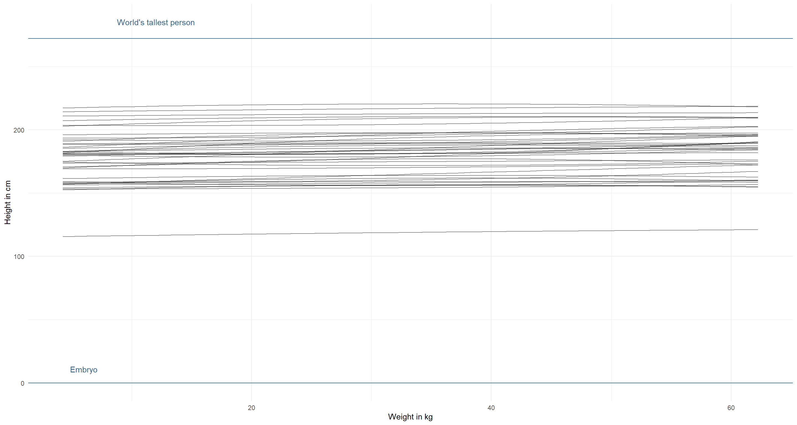
The priors should cover the whole biologically sensible space (unless we have some really strong indication for this not being the case). Let’s start by decreasing the mean for $\alpha$ and increasing its standard deviation:
modify_prior_poly(
my_alist = alist(
height ~ dnorm(mu, sigma),
mu <- a + b1 * weight_s + b2 * weight_s2,
a ~ dnorm(130, 35), # decrease mean and increase sd
b1 ~ dlnorm(0, 1),
b2 ~ dnorm(0, 1),
sigma ~ dunif(0, 50)
),
N = 40
)
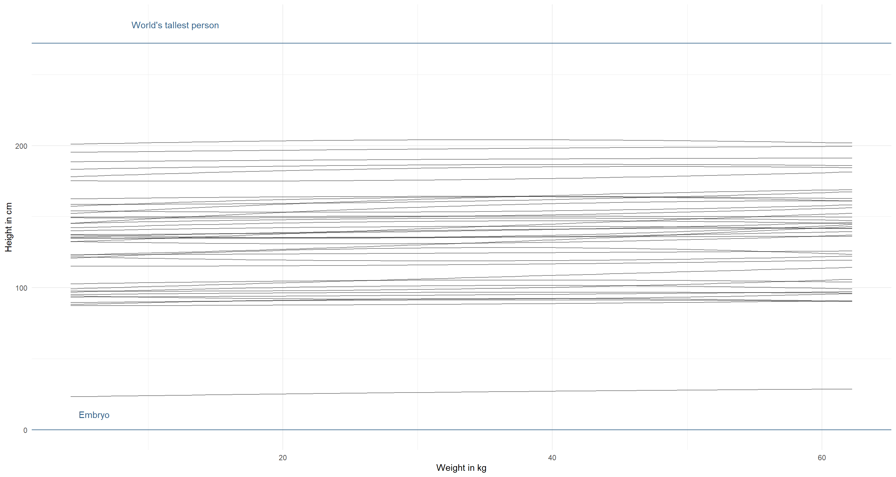
Better, but not quite there yet. The lines themselves could do with stronger positive relationship here between weight and height. We know this relationship to be stronger:
modify_prior_poly(
my_alist = alist(
height ~ dnorm(mu, sigma),
mu <- a + b1 * weight_s + b2 * weight_s2,
a ~ dnorm(130, 35),
b1 ~ dlnorm(1, 1), # increase mean, but not sd (we don't want negative relationships)
b2 ~ dnorm(0, 1),
sigma ~ dunif(0, 50)
),
N = 40
)
I am already happy with this. However, we can see some downward curving weight-height relationships here. That’s probably not what we find in the real-world and so we might want to force these relationships to always curve upwards, by having a positive $\beta_2$ with a narrow log-normal distribution:
modify_prior_poly(
my_alist = alist(
height ~ dnorm(mu, sigma),
mu <- a + b1 * weight_s + b2 * weight_s2,
a ~ dnorm(130, 35),
b1 ~ dlnorm(1, 1),
b2 ~ dlnorm(0, .05), # force positive parameter
sigma ~ dunif(0, 50)
),
N = 40
)
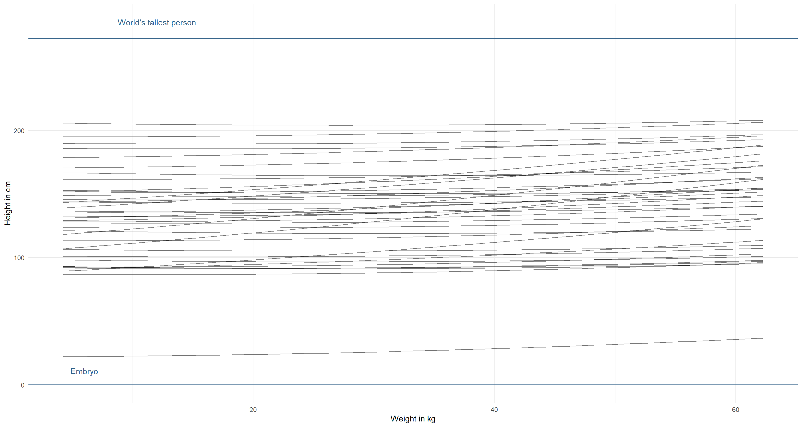
Phew. I can’t think of more, to be honest. This looks good to me.
Session Info
sessionInfo()
## R version 4.0.5 (2021-03-31)
## Platform: x86_64-w64-mingw32/x64 (64-bit)
## Running under: Windows 10 x64 (build 19043)
##
## Matrix products: default
##
## locale:
## [1] LC_COLLATE=English_United Kingdom.1252 LC_CTYPE=English_United Kingdom.1252 LC_MONETARY=English_United Kingdom.1252 LC_NUMERIC=C
## [5] LC_TIME=English_United Kingdom.1252
##
## attached base packages:
## [1] parallel stats graphics grDevices utils datasets methods base
##
## other attached packages:
## [1] tidyr_1.1.3 rethinking_2.13 rstan_2.21.2 ggplot2_3.3.3 StanHeaders_2.21.0-7
##
## loaded via a namespace (and not attached):
## [1] Rcpp_1.0.7 mvtnorm_1.1-1 lattice_0.20-41 prettyunits_1.1.1 ps_1.6.0 assertthat_0.2.1 digest_0.6.27 utf8_1.2.1 V8_3.4.1 R6_2.5.0
## [11] backports_1.2.1 stats4_4.0.5 evaluate_0.14 coda_0.19-4 highr_0.9 blogdown_1.3 pillar_1.6.0 rlang_0.4.11 curl_4.3.2 callr_3.7.0
## [21] jquerylib_0.1.4 R.utils_2.10.1 R.oo_1.24.0 rmarkdown_2.7 styler_1.4.1 labeling_0.4.2 stringr_1.4.0 loo_2.4.1 munsell_0.5.0 compiler_4.0.5
## [31] xfun_0.22 pkgconfig_2.0.3 pkgbuild_1.2.0 shape_1.4.5 htmltools_0.5.1.1 tidyselect_1.1.0 tibble_3.1.1 gridExtra_2.3 bookdown_0.22 codetools_0.2-18
## [41] matrixStats_0.61.0 fansi_0.4.2 crayon_1.4.1 dplyr_1.0.5 withr_2.4.2 MASS_7.3-53.1 R.methodsS3_1.8.1 grid_4.0.5 jsonlite_1.7.2 gtable_0.3.0
## [51] lifecycle_1.0.0 DBI_1.1.1 magrittr_2.0.1 scales_1.1.1 RcppParallel_5.1.2 cli_3.0.0 stringi_1.5.3 farver_2.1.0 bslib_0.2.4 ellipsis_0.3.2
## [61] generics_0.1.0 vctrs_0.3.7 rematch2_2.1.2 tools_4.0.5 R.cache_0.14.0 glue_1.4.2 purrr_0.3.4 processx_3.5.1 yaml_2.2.1 inline_0.3.17
## [71] colorspace_2.0-0 knitr_1.33 sass_0.3.1